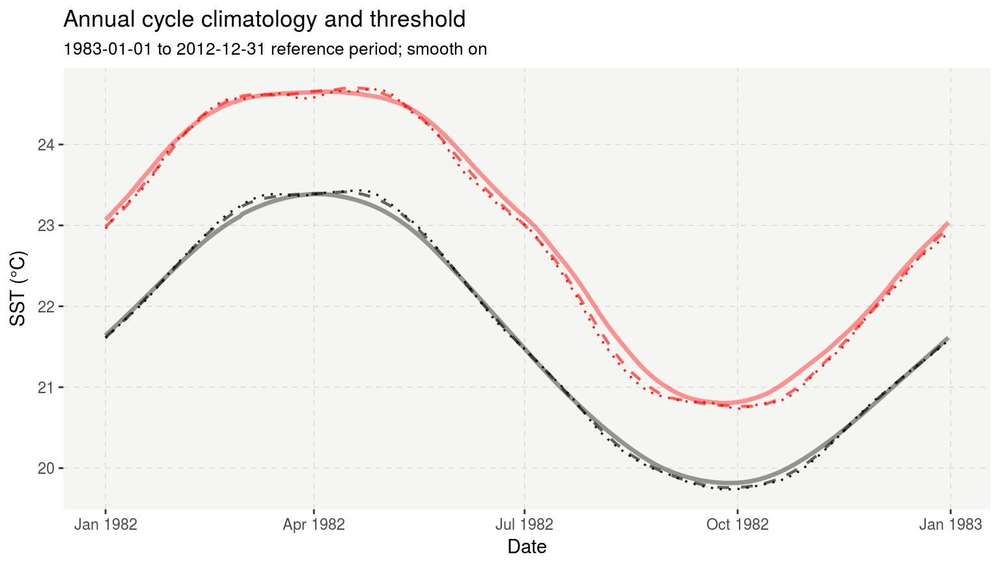
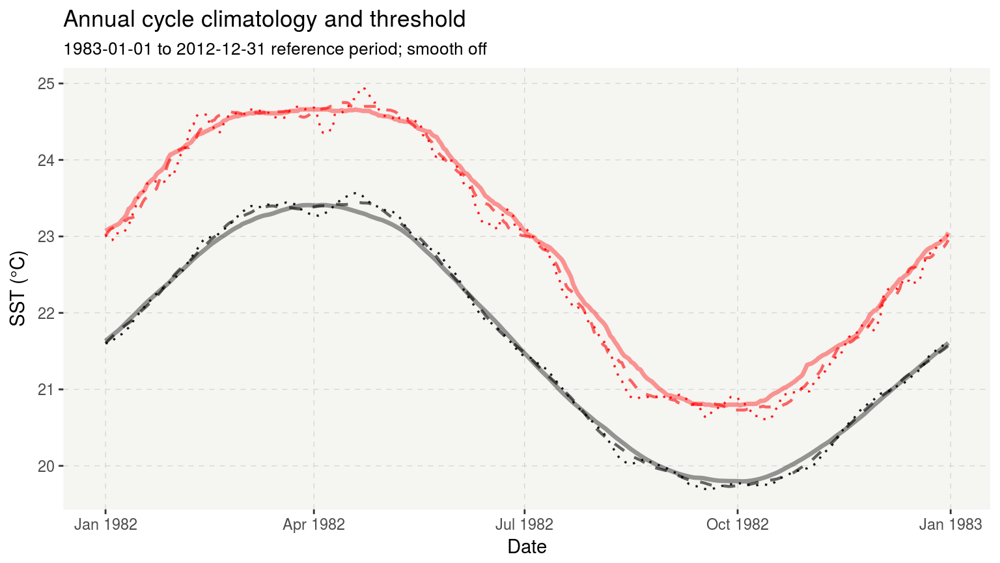

Climatologies_and_baselines.RmdAJS still actively working on this…
library(ggplot2) # misc. data processing conveniences
library(lubridate) # for working with dates
library(heatwaveR)# Using a built-in data set
#smooth_percentile = TRUE
ts_dat <- heatwaveR::make_whole(sst_WA)
res.11.T <- heatwaveR::detect(ts_dat, climatology_start = "1983-01-01",
climatology_end = "2012-12-31")
res.31.T <- heatwaveR::detect(ts_dat, climatology_start = "1983-01-01",
climatology_end = "2012-12-31",
window_half_width = 15)
res.61.T <- heatwaveR::detect(ts_dat, climatology_start = "1983-01-01",
climatology_end = "2012-12-31",
window_half_width = 30)
# smooth_percentile = FALSE
res.11.F <- heatwaveR::detect(ts_dat, climatology_start = "1983-01-01",
climatology_end = "2012-12-31", smooth_percentile = F)
res.31.F <- heatwaveR::detect(ts_dat, climatology_start = "1983-01-01",
climatology_end = "2012-12-31",
window_half_width = 15, smooth_percentile = F)
res.61.F <- heatwaveR::detect(ts_dat, climatology_start = "1983-01-01",
climatology_end = "2012-12-31",
window_half_width = 30, smooth_percentile = F)theme_publ <- function(...) {
theme_bw() +
theme(
panel.grid.minor = element_blank(),
panel.grid.major.x = element_line(color = "#cfcfcf",
size = 0.2,
linetype = "dashed"),
panel.grid.major.y = element_line(color = "#cfcfcf",
size = 0.2,
linetype = "dashed"),
panel.background = element_rect(fill = "#f5f5f2", color = NA),
legend.background = element_rect(fill = "white", color = NA),
panel.border = element_blank(),
...
)
}ggplot(data = dplyr::filter(res.11.T$clim, t <= "1982-12-31"),
aes(x = t, y = seas_clim_year)) +
geom_line(size = 0.6, linetype = "dotted", alpha = 0.9) +
geom_line(aes(y = thresh_clim_year),
colour = "red",
size = 0.6,
linetype = "dotted", alpha = 0.9) +
geom_line(data = dplyr::filter(res.31.T$clim, t <= "1982-12-31"),
aes(x = t, y = seas_clim_year),
linetype = "dashed",
size = 0.8, alpha = 0.6) +
geom_line(data = dplyr::filter(res.31.T$clim, t <= "1982-12-31"),
aes(x = t, y = thresh_clim_year),
linetype = "dashed",
colour = "red",
size = 0.8, alpha = 0.6) +
geom_line(data = dplyr::filter(res.61.T$clim, t <= "1982-12-31"),
aes(x = t, y = seas_clim_year),
size = 1.2, alpha = 0.4) +
geom_line(data = dplyr::filter(res.61.T$clim, t <= "1982-12-31"),
aes(x = t, y = thresh_clim_year),
colour = "red",
size = 1.2, alpha = 0.4) +
labs(x = "Date", y = "SST (°C)", title = "Annual cycle climatology and threshold",
subtitle = "1983-01-01 to 2012-12-31 reference period; smooth on") +
theme_publ()
ggplot(data = dplyr::filter(res.11.F$clim, t <= "1982-12-31"),
aes(x = t, y = seas_clim_year)) +
geom_line(size = 0.6, linetype = "dotted", alpha = 0.9) +
geom_line(aes(y = thresh_clim_year),
colour = "red",
size = 0.6,
linetype = "dotted", alpha = 0.9) +
geom_line(data = dplyr::filter(res.31.F$clim, t <= "1982-12-31"),
aes(x = t, y = seas_clim_year),
linetype = "dashed",
size = 0.8, alpha = 0.6) +
geom_line(data = dplyr::filter(res.31.F$clim, t <= "1982-12-31"),
aes(x = t, y = thresh_clim_year),
linetype = "dashed",
colour = "red",
size = 0.8, alpha = 0.6) +
geom_line(data = dplyr::filter(res.61.F$clim, t <= "1982-12-31"),
aes(x = t, y = seas_clim_year),
size = 1.2, alpha = 0.4) +
geom_line(data = dplyr::filter(res.61.F$clim, t <= "1982-12-31"),
aes(x = t, y = thresh_clim_year),
colour = "red",
size = 1.2, alpha = 0.4) +
labs(x = "Date", y = "SST (°C)", title = "Annual cycle climatology and threshold",
subtitle = "1983-01-01 to 2012-12-31 reference period; smooth off") +
theme_publ()